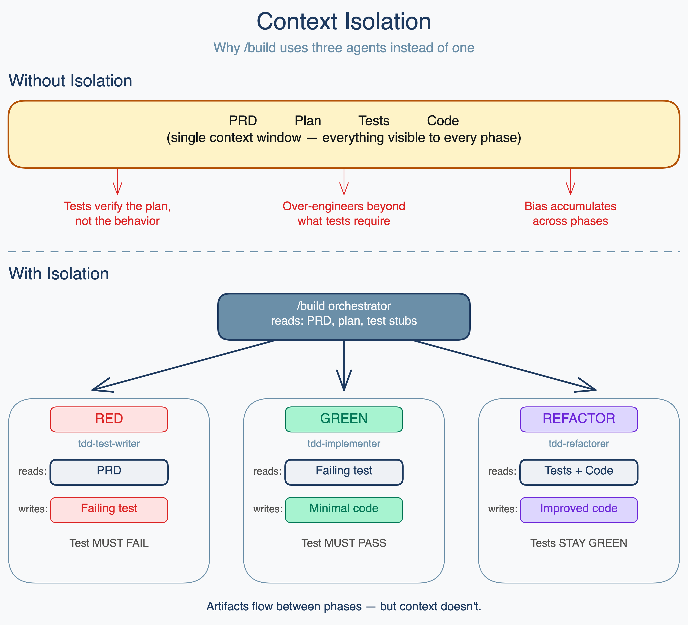

CONTEXT ISOLATION

Test writer sees: PRD only
Writes tests against stated behavior. If the plan is wrong, the tests still test the right thing.
Implementer sees: Failing tests only
Writes the minimum code to make tests pass. Can't over-engineer what it can't see.
Refactorer sees: Tests + code
Improves structure without changing behavior. Green tests are the constraint.
Artifacts flow between phases — but context doesn't. The absence of connections IS the architecture.